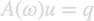
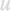
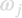
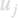
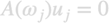
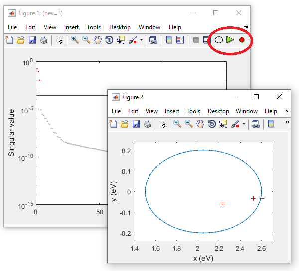
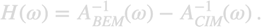

galerkin.cimsolver
The contour integral method (CIM) is an approximate solution scheme for the BEM equations using resonance modes. Our approach is still somewhat experimental and should be used with care.
Contents
Theory
In the BEM approach ones solves the equations

where is the Calderon or transmission matrix, is the inhomogeneity vector of the external excitation, for instance a plane wave excitation, and

is the solution vector. In the CIM approach one seeks for the complex resonance frequencies
and modes
defined through

and solves the BEM equations with these resonance modes. Using the contour integral method of Beym (2012), we define an ellipse contour in the complex frequency plane and compute the Calderon matrix along this contour. Together with a random matrix it is then possible to obtain the resonance modes without any further scanning in complex frequency space. For details see Hohenester (2022) and Unger (2018).
- Hohenester, Reichelt, Unger, to appear in CPC (2022)
- Unger, Tr�gler, Hohenester, Phys. Rev. Lett. 121, 246802 (2018)
- Beyn, Linear Algebra Appl. 346, 3839 (2012)
Initialization
% initialize CIM solver % tau - boundary elements % 'nr' - size of random matrix needed for Beyn approach % 'nz' - CIM(nz) algorithm, see Beyn Sec. 5 % plane obj = cimsolver( tau, PropertyPairs ); % initialize CIM contour % zmin - minimum of real values of ellipse in eV % zmanx - maximum of real values of ellipse in eV % irad - radius of ellipse in imaginary direction in eV % n - number of evaluation points along ellipse in complex frequency obj.contour = cimbase.ellipse( [ zmin, zmax ], irad, n );
For an offset of the ellipse in the complex frequency plane one can use [zmin,zmax]+1i*zoffset.
Evaluation of resonance modes
% evaluation of Calderon matrix along ellipse % PropertyPairs are passed to initialization of BEM solver data = eval1( obj, PropertyPairs ); % select number of resonance modes tol = tolselect( obj, data, 'tol', tol );

Figure 1 shows the singular values of the Beyn approach. The user can select the resonance modes interactively with the mouse by moving into the figure and clicking at the requested cutoff for the singular value. The red ellipse indicates three icons attached to the figure panel for additional interactivity. When pressing the ellipse icon, an additional figure opens which displays the contour in the complex plane together with the position of the resonance frequencies. By clicking the green button the resonance modes are accepted, by pressing the red circle the results are discared.
% discard resonance modes if red circle is pressed if isempty( tol ), return; end % compute normalization for resonance modes obj = eval2( obj, data, 'tol', tol );
obj =
cimsolver with properties:
sol2: [1�1 galerkin.solution]
res: [1�16 double]
tau: [1�284 BoundaryEdge]
contour: [1�60 struct]
nr: 150
ene: [16�1 double]
sol: [1�1 galerkin.solution]
ene contains the resonance energies in eV, sol the resonance modes, and sol2 the adjoint resonance modes. These modes can be plotted in the same way as the solutions of the BEM approach.
Methods
Once the CIM solver is initialized and the resonance modes have been computed, the CIM solver can be used in complete analogy to the BEM solver.
% approximately solve BEM equations for given inhomogeneity using % resonance modes sol = solve( obj, q ); % shorthand notation for BEM solution sol = obj \ q;
We also provide a simple method for adding a nonresonant background, which seems to play an important role in some cases of interest. To this end, we estimate the holomorphic matrix from the difference between the inverse of the BEM transmission matrix and its CIM approximation

We recommend using three or more frequencies in the energy window under consideration, and to interpolate the nonresonant matrix in between using a quadratic or cubic interpolation. This can be done for instance through
% sampling wavenumbers for interpolation of nonresonant matrix ktab = 2 * pi ./ [ 400, 600, 700 ]; % add nonresonant background to CIM solver % CIM - CIM solver % BEM - BEM solver, stored e.g. in data.bem cim.nonresonant = diffcalderon( cim, bem, ktab );
Known problems
The performance of the CIM solver can depend sensitively on the parameters for the contour in the complex frequency space as well as the accuracy of the BEM integrations. Quite generally, the contour should enclose the most important resonances and should pass sufficiently close to them. On the other hand, the contour should not enclose any point of accumulation for the resonance modes.
At present the CIM approach cannot be used in a black-box manner. For this reason, we provide the GUI for the choice of the singular-value cutoff and the location of the resonances, and recommend checking carefully these informations before continuing with the resonance mode normalization and any BEM solution based on resonance modes.
Examples
- democim01.m - Compute resonance modes and perform simulations for optically excited ellipsoid.
- democim02.m - Compute resonance modes and perform simulations for oscillating dipole in proximity to ellipsoid.
- democim03.m - Resonance modes for dielectric nanosphere with nonresonant background.
Copyright 2022 Ulrich Hohenester